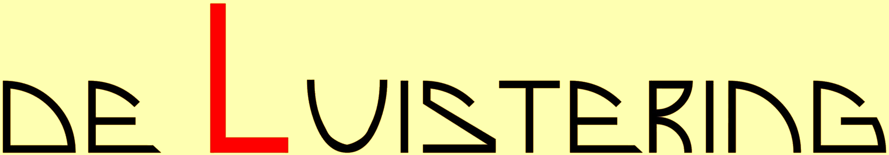
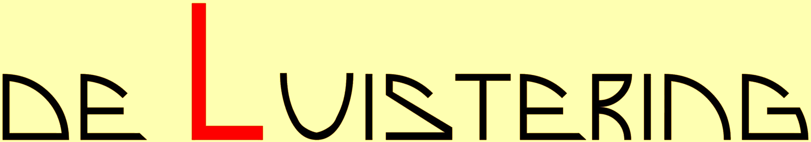
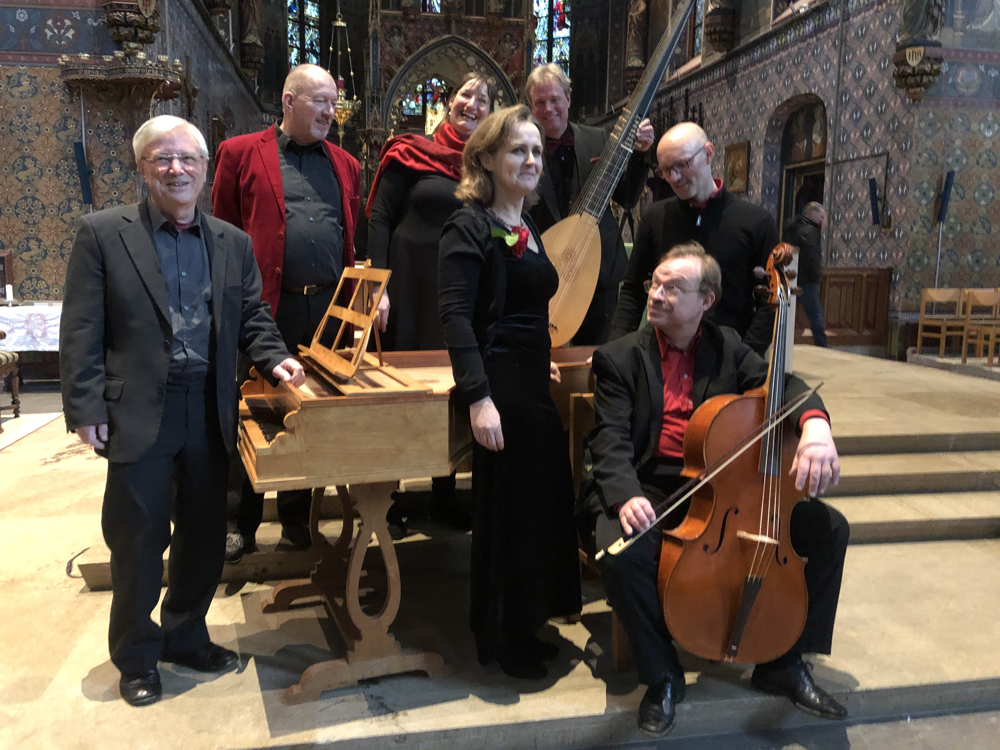
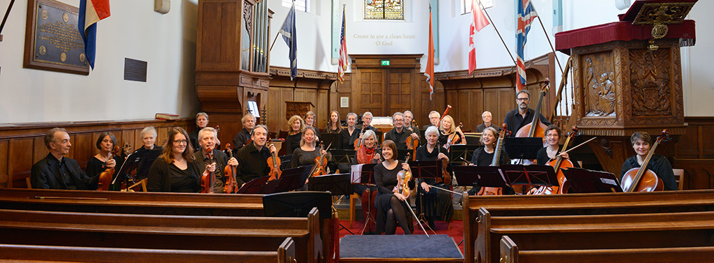
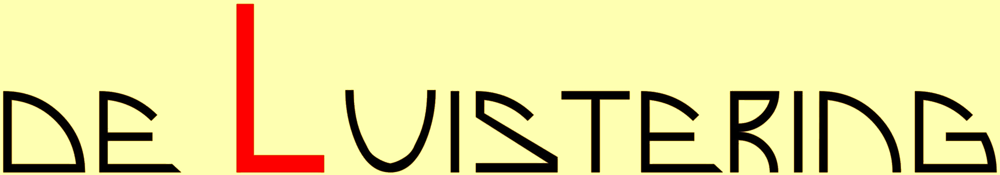

verbonden aan : 
• emeritus-predikant van de Protestantse Kerk in Nederland
verbonden aan : 
• emeritus-predikant van de Protestantse Kerk in Nederland

• klavecinist/organist
maakte deel uit van het ensemble 'Con Piacere' 
en van het 'Purcell Kamerorkest' 
verbonden aan : 
• emeritus-predikant van de Protestantse Kerk in Nederland